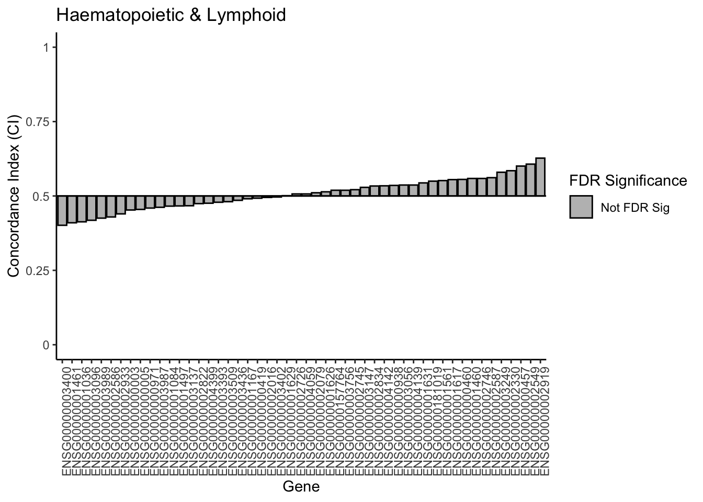
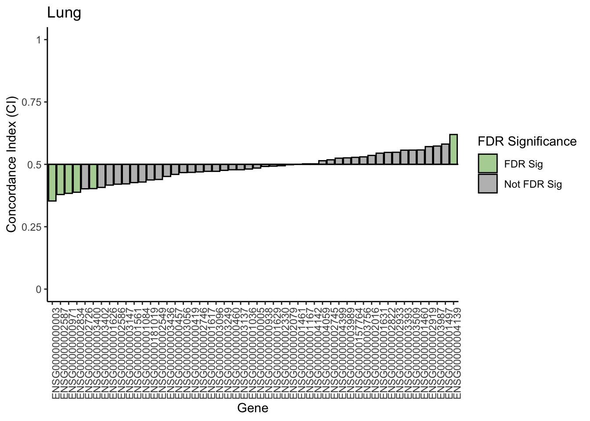

Subgroup Analysis
We will now conduct a tissue-subgroup analysis using a subset of the CCLEsmall dataset,
using all the steps that we have learned from this workshop.
We will be looking at the response of RNA-Seq data on AUC drug response. We will take a discovery approach, looking for any associations in our rich dataset.
Data Preparation
Let’s start by loading in and looking at our data.
# load in expression data
expr <- summarizeMolecularProfiles(CCLEsmall, mDataType='rna') |> assay()
expr[1:5,1:5]## 1321N1 143B 22RV1 23132-87 253J-BV
## ENSG00000181019 10.907043 9.773744 8.907329 13.961104 12.258347
## ENSG00000157764 7.072053 6.553047 7.237172 7.462726 7.190695
## ENSG00000000003 4.052251 10.542824 7.951917 8.079243 10.079808
## ENSG00000000005 3.430694 3.585748 3.524705 3.580134 3.651864
## ENSG00000000419 13.477683 12.891333 12.043700 12.200771 12.133981# load in drug response data
auc <- summarizeSensitivityProfiles(
CCLEsmall,
sensitivity.measure = "auc_published",
summary.stat = "median",
verbose = FALSE
)
auc[1:5,1:5]## 1321N1 143B 22RV1 23132-87 253J-BV
## PD-0325901 0.1148875 NA 0.385000 NA NA
## 17-AAG 0.4177000 NA 0.372460 NA NA
## AEW541 0.0873750 NA 0.220500 NA NA
## Nilotinib NA NA 0.000000 NA NA
## PHA-665752 0.0333750 NA 0.094375 NA NAWe have our RNA-Seq expression and drug response matrix in the feature~sample format.
Next, let’s load in the metadata for the cell lines.
## [1] "samplename" "filename"
## [3] "chiptype" "hybridization.date"
## [5] "hybridization.hour" "file.day"
## [7] "file.hour" "batch"
## [9] "sampleid" "CCLE.name"
## [11] "Cell.line.primary.name" "Cell.line.aliases"
## [13] "Gender" "Site.Primary"
## [15] "Histology" "Hist.Subtype1"
## [17] "Notes" "Source"
## [19] "Expression.arrays" "SNP.arrays"
## [21] "Oncomap" "Hybrid.Capture.Sequencing"
## [23] "batchid" "rownames"Since we want to do a tissue subgroup analysis, we need to identify the variable that gives us the tissue type for each cell line.
We also need to find the variable that maps to the column names of our expr matrix.
Then, we make sure that all our samples are present in this metadata
## DataFrame with 6 rows and 2 columns
## Cell.line.primary.name
## <character>
## NIECE_P_NCLE_RNA3_HG-U133_PLUS_2_B06_296024 1321N1
## MAKER_P_NCLE_RNA7_HG-U133_PLUS_2_F09_454702 143B
## NIECE_P_NCLE_RNA3_HG-U133_PLUS_2_F06_296120 22Rv1
## WATCH_P_NCLE_RNA8_HG-U133_PLUS_2_E11_474718 23132/87
## CRAZY_P_NCLE_RNA10_HG-U133_PLUS_2_A05_569490 253J-BV
## CRAZY_P_NCLE_RNA10_HG-U133_PLUS_2_A03_569510 253J
## Site.Primary
## <character>
## NIECE_P_NCLE_RNA3_HG-U133_PLUS_2_B06_296024 central_nervous_system
## MAKER_P_NCLE_RNA7_HG-U133_PLUS_2_F09_454702 bone
## NIECE_P_NCLE_RNA3_HG-U133_PLUS_2_F06_296120 prostate
## WATCH_P_NCLE_RNA8_HG-U133_PLUS_2_E11_474718 stomach
## CRAZY_P_NCLE_RNA10_HG-U133_PLUS_2_A05_569490 urinary_tract
## CRAZY_P_NCLE_RNA10_HG-U133_PLUS_2_A03_569510 urinary_tract# check for cell lines included in metadata
colnames(expr) %in% meta$Cell.line.primary.name |> table()##
## FALSE TRUE
## 125 936Notice we have some cell lines not included in the metadata. We will want to remove these samples from our analysis as we cannot give them a tissue label.
# identify cell lines with both expression and metadata
commonCells <- intersect(colnames(expr), meta$Cell.line.primary.name)
paste("Number of common cell lines:", length(commonCells))## [1] "Number of common cell lines: 936"# check that all these cell lines also have drug response data
commonCells %in% colnames(auc) |> table()##
## TRUE
## 936# subset metadata to only include these samples
meta <- meta[meta$Cell.line.primary.name %in% commonCells,]
dim(meta)## [1] 936 24There were 936 cell lines with all RNA-Seq expression, drug response, and metadata. We only keep the metadata for these cell lines.
Next, let’s take a look at the tissue types available within the samples we have.
##
## autonomic_ganglia biliary_tract
## 15 7
## bone breast
## 26 56
## central_nervous_system endometrium
## 59 24
## haematopoietic_and_lymphoid_tissue kidney
## 168 32
## large_intestine liver
## 52 26
## lung oesophagus
## 175 26
## ovary pancreas
## 47 38
## pleura prostate
## 10 5
## salivary_gland skin
## 1 55
## soft_tissue stomach
## 20 31
## thyroid upper_aerodigestive_tract
## 11 29
## urinary_tract
## 23We have a large range of different tissue types represented in our CCLE dataset.
Let’s select haematopoietic_and_lymphoid_tissue and lung tissues as they have
the largest sample sizes.
Let’s subset our PSets for each of these tissue types.
# get cell lines from each tissue
lymp_cells <- meta$Cell.line.primary.name[meta$Site.Primary == "haematopoietic_and_lymphoid_tissue"]
lung_cells <- meta$Cell.line.primary.name[meta$Site.Primary == "lung"]
# subset psets to only include cells within each tissue group
lymp_pset <- subsetTo(CCLEsmall, cells = lymp_cells)
lung_pset <- subsetTo(CCLEsmall, cells = lung_cells)
# quickly check dimensions of the assays in our subsetted psets
assay(summarizeMolecularProfiles(lymp_pset, mDataType='rna')) |> dim()## [1] 50 168All our molecular profiles and drug response data within each tissue-specific pset is now subsetted to only include the cell lines that are in the respective tissue.
Statistical Analysis to measure Drug Response Associations
Let’s say we want to discover a gene (biomarker) that is predictive of response to
the drug lapatinib. To do that, we will compute the association between the
expression of each gene to the lapatinib drug response.
First, let’s get our assays:
# extract the expression assays
lymp_expr <- assay(summarizeMolecularProfiles(lymp_pset, mDataType='rna'))
lung_expr <- assay(summarizeMolecularProfiles(lung_pset, mDataType='rna'))
# extract the drug response assays
lymp_auc <- summarizeSensitivityProfiles(lymp_pset, sensitivity.measure = "auc_published",
summary.stat = "median", verbose = FALSE)
lung_auc <- summarizeSensitivityProfiles(lung_pset, sensitivity.measure = "auc_published",
summary.stat = "median", verbose = FALSE)
# extract just the drug response vector for lapatinib
drug <- "lapatinib"
lymp_auc <- lymp_auc[drug,]
lung_auc <- lung_auc[drug,]
# quickly view the data
lymp_expr[1:5,1:5]## 697 ALL-SIL AML-193 AMO-1 BCP-1
## ENSG00000181019 6.609914 7.032188 7.637502 9.810762 10.006768
## ENSG00000157764 7.754090 7.138147 7.228066 8.115521 7.197811
## ENSG00000000003 4.509136 4.072092 3.937972 5.118464 3.846667
## ENSG00000000005 3.736073 3.661470 3.770592 3.803109 3.660946
## ENSG00000000419 11.718635 11.769529 12.287833 12.586162 11.837654## 697 ALL-SIL AML-193 AMO-1 BCP-1
## 0.0453250 0.0767875 NA 0.0663875 NAThe PSet has already ensured that the cell line order between the RNA-Seq expression matrix and the drug response vector is the same. Don’t forget to always check when working with your own data.
Now we will have to compute the association between each gene to lapatinib. We can use a for loop to quickly do this:
# create data frame to hold results
results <- as.data.frame(matrix(data = NA, nrow = 0, ncol = 7))
colnames(results) <- c("gene", "drug", "ci", "pvalue", "se", "upper", "lower")
# get the number of genes (features)
num_genes <- nrow(lymp_expr)
# loop through every gene to compute concordance index to drug responses
for (gene in rownames(lymp_expr)) {
# compute concordance index
ci <- survcomp::concordance.index(
as.numeric(lymp_auc), # drug vector
surv.time = as.numeric(lymp_expr[gene,]), # gene vector
surv.event = rep(1,length(lymp_expr[gene,])),
outx = TRUE, method="noether", na.rm = TRUE
)
# extract summary statistics
gene_result <- data.frame(gene, drug,
ci = ci$c.index,
pvalue = ci$p.value,
se = ci$se,
upper = ci$upper,
lower = ci$lower)
# merge with results dataframe
results <- rbind(results, gene_result)
}
# filtering and multiple test correction
results <- results[complete.cases(results$pvalue),]
results$FDR <- p.adjust(results$pvalue, method = "BH", n = length(results$pvalue))
results |> head()## gene drug ci pvalue se upper lower
## 1 ENSG00000181019 lapatinib 0.5497723 0.30681314 0.04870411 0.6452306 0.4543140
## 2 ENSG00000157764 lapatinib 0.5191932 0.72503712 0.05456734 0.6261432 0.4122432
## 3 ENSG00000000003 lapatinib 0.4528302 0.38826533 0.05467268 0.5599867 0.3456737
## 4 ENSG00000000005 lapatinib 0.4547820 0.37310423 0.05076826 0.5542860 0.3552781
## 5 ENSG00000000419 lapatinib 0.4925179 0.86910085 0.04540095 0.5815021 0.4035337
## 6 ENSG00000000457 lapatinib 0.6005205 0.06179093 0.05381779 0.7060014 0.4950396
## FDR
## 1 0.8522587
## 2 0.9062964
## 3 0.8688491
## 4 0.8688491
## 5 0.9516488
## 6 0.7079522Notice at the end we also computed the false discovery rate (FDR) which is a method for multiple test correction.
We would have to repeat this code for every tissue type. Although we are only working with two, imagine we wanted to do more tissue types in the future.
Function for computing concordance index
To simply this, we can turn the code above into a function such that we just have to input the expression matrix and drug response vector to get our result without having to change the rest of the code.
Below is a function named compute_CI which takes two arguments:
- expr: an expression matrix with features as rows and samples as columns
- drug_vector: a vector of drug response in the same order as the samples in expr
- drug: string name of drug (just for putting in the results dataframe)
compute_CI <- function(expr, drug_vector, drug) {
# create data frame to hold results
results <- as.data.frame(matrix(data = NA, nrow = 0, ncol = 7))
colnames(results) <- c("gene", "drug", "ci", "pvalue", "se", "upper", "lower")
# get the number of genes (features)
num_genes <- nrow(expr)
# loop through every gene to compute concordance index to drug responses
for (gene in rownames(expr)) {
# compute concordance index
ci <- survcomp::concordance.index(
as.numeric(drug_vector), # drug vector
surv.time = as.numeric(expr[gene,]), # gene vector
surv.event = rep(1,length(expr[gene,])),
outx = TRUE, method="noether", na.rm = TRUE
)
# extract summary statistics
gene_result <- data.frame(gene, drug,
ci = ci$c.index,
pvalue = ci$p.value,
se = ci$se,
upper = ci$upper,
lower = ci$lower)
# merge with results dataframe
results <- rbind(results, gene_result)
}
# filtering and multiple test correction
results <- results[complete.cases(results$pvalue),]
results$FDR <- p.adjust(results$pvalue, method = "BH", n = length(results$pvalue))
results$FDRsig <- ifelse(results$FDR < 0.05, 'FDR Sig', 'Not FDR Sig')
# output results
return(results)
}
# use this function on both our lymp and lung data
lymp_results <- compute_CI(expr = lymp_expr, drug_vector = lymp_auc, drug = drug)
lung_results <- compute_CI(expr = lung_expr, drug_vector = lung_auc, drug = drug)
lymp_results |> head()## gene drug ci pvalue se upper lower
## 1 ENSG00000181019 lapatinib 0.5497723 0.30681314 0.04870411 0.6452306 0.4543140
## 2 ENSG00000157764 lapatinib 0.5191932 0.72503712 0.05456734 0.6261432 0.4122432
## 3 ENSG00000000003 lapatinib 0.4528302 0.38826533 0.05467268 0.5599867 0.3456737
## 4 ENSG00000000005 lapatinib 0.4547820 0.37310423 0.05076826 0.5542860 0.3552781
## 5 ENSG00000000419 lapatinib 0.4925179 0.86910085 0.04540095 0.5815021 0.4035337
## 6 ENSG00000000457 lapatinib 0.6005205 0.06179093 0.05381779 0.7060014 0.4950396
## FDR FDRsig
## 1 0.8522587 Not FDR Sig
## 2 0.9062964 Not FDR Sig
## 3 0.8688491 Not FDR Sig
## 4 0.8688491 Not FDR Sig
## 5 0.9516488 Not FDR Sig
## 6 0.7079522 Not FDR SigWe also added a column called FDRsig which represents if the association met the
FDR < 5% threshold. This will help us in plotting.
Visualizing feature-drug associations
Now that we have the associations between all our genes with lapatinib response for both our tissue groups, let’s visualize the distribution of the computed associations.
Let’s first rank by concordance index.
lymp_results <- lymp_results[order(lymp_results$ci),]
lung_results <- lung_results[order(lung_results$ci),]
lymp_results |> head()## gene drug ci pvalue se upper
## 40 ENSG00000003400 lapatinib 0.4014314 0.07602913 0.05555649 0.5103201
## 14 ENSG00000001461 lapatinib 0.4098894 0.08110842 0.05166032 0.5111418
## 10 ENSG00000001036 lapatinib 0.4131425 0.10091227 0.05294747 0.5169176
## 35 ENSG00000003096 lapatinib 0.4183474 0.11327235 0.05155958 0.5194024
## 46 ENSG00000003989 lapatinib 0.4255042 0.14509404 0.05112672 0.5257108
## 25 ENSG00000002586 lapatinib 0.4294079 0.17377225 0.05189897 0.5311281
## lower FDR FDRsig
## 40 0.2925426 0.7079522 Not FDR Sig
## 14 0.3086370 0.7079522 Not FDR Sig
## 10 0.3093674 0.7079522 Not FDR Sig
## 35 0.3172925 0.7079522 Not FDR Sig
## 46 0.3252977 0.7254702 Not FDR Sig
## 25 0.3276878 0.7898739 Not FDR SigNext, we will create a waterfall plot. We’ve created a function to do so, the function
is named plot_waterfall and takes the following arguments:
- ci_results: results matrix from the compute_CI function
- tissue: string of the tissue type
# create palette
pal <- c('FDR Sig' = "#B1D3A3", 'Not FDR Sig' = "gray")
# function to plot waterfall plots
plot_waterfall <- function(ci_results, tissue) {
# minor formating for plotting
ci_results$rank <- 1:nrow(ci_results)
ci_results$rank <- as.factor(ci_results$rank)
ci_results$drug <- as.factor(ci_results$drug)
# create waterfall plot
ggplot(ci_results, aes(x = ci - 0.5, y = rank)) +
geom_col(aes(fill = FDRsig), color = "black") +
scale_x_continuous(limits = c(-0.5, 0.5), labels = function(x) x + 0.5) +
scale_y_discrete(breaks = ci_results$rank, labels = ci_results$gene) +
geom_vline(xintercept = 0) +
scale_fill_manual("FDR Significance", values = pal) +
theme_classic() +
theme(axis.text.x = element_text(angle = 90, hjust = 1)) +
labs(y = "Gene", title = tissue, x = "Concordance Index (CI)") +
coord_flip()
}
# call the function on our lymp and lung results
plot_waterfall(lymp_results, 'Haematopoietic & Lymphoid')

Notice that there are no FDR significant associations within the lymp data, but there are some from the lung data.
If you inspect closely, you can also see that the genes with the most predictive power (low and high CI values) are different between the two tissue types.
Identifying candidate biomarkers
We see some FDR significant associations in our lung data. Let’s extract those genes.
## gene drug ci pvalue se upper
## 3 ENSG00000000003 lapatinib 0.3532213 2.812853e-05 0.03504651 0.4219112
## 26 ENSG00000002587 lapatinib 0.3789916 3.713691e-04 0.03399460 0.4456198
## 9 ENSG00000000971 lapatinib 0.3837535 3.707483e-04 0.03265282 0.4477519
## 31 ENSG00000002834 lapatinib 0.3882353 1.091398e-03 0.03422234 0.4553099
## 40 ENSG00000003400 lapatinib 0.4028011 5.219215e-03 0.03479861 0.4710051
## 48 ENSG00000004139 lapatinib 0.6196078 1.663106e-04 0.03176533 0.6818667
## lower FDR FDRsig
## 3 0.2845314 0.001406427 FDR Sig
## 26 0.3123634 0.004642114 FDR Sig
## 9 0.3197552 0.004642114 FDR Sig
## 31 0.3211607 0.010913980 FDR Sig
## 40 0.3345971 0.043493456 FDR Sig
## 48 0.5573489 0.004157765 FDR SigThere are 6 genes that have FDR significant associations with lapatinib response.
Of these 6, the most predictive is ENSG00000000003 which is associated with
resistance (CI < 0.5).
A next possible step would be to take some of these genes and assess their association in lung tissue-derived cell lines from another PSet (do a meta-analysis!)